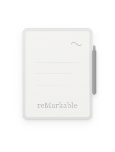
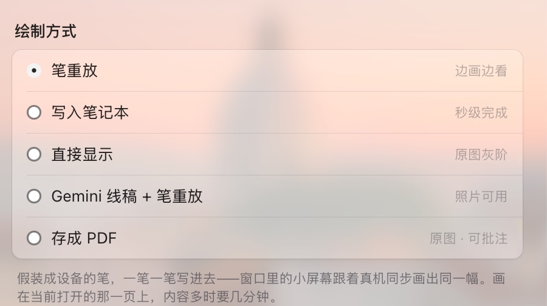
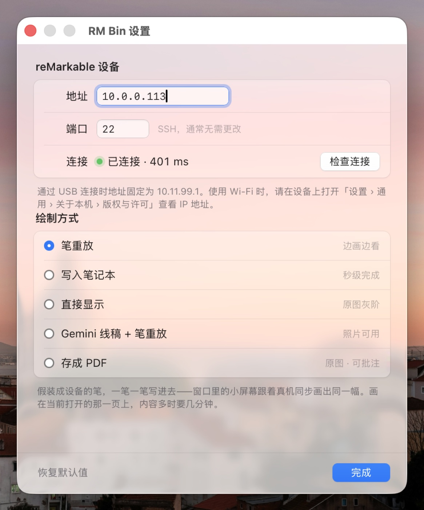

一枚停在桌角的迷你 Paper Pro。松手的那一刻，窗口里的小屏幕和你手边的真机 同时开始落墨——同一幅画，同一个节奏。

把图片拖到那台小设备上。纸面会抬起来，跟着你的光标倾斜。
图像被转成笔画。你选的方式决定它是被一笔笔写下去，还是整页递过去。
扫描线自上而下推进——它跟的是设备的真实进度，不是计时器。
同一张图，可以用五种方式抵达设备。它们是真正不同的取舍，所以做成了设置项， 而不是藏在代码里的常量。

⌘, 或右键那台小设备。独立的原生窗口，改完失焦即生效，没有「保存 / 取消」。 「检查连接」会对设备的 SSH 端口做一次真实握手，告诉你往返延迟，或者到底哪一步不通。
背景是 macOS 26 的 Liquid Glass。旧系统上自动退回经典材质，不会变成一块灰板。

下载 .dmg，拖进「应用程序」。App 已用 Developer ID 签名并通过 Apple 公证，
首次打开不会被拦。
设备地址在 设置 › 通用 › 关于本机 › 版权与许可 里；USB 直连时固定是
10.11.99.1。
git clone https://github.com/JIACHENG135/rm-bin cd rm-bin npm install npm run tauri dev
需要 Rust 和 Node。不要用 sudo——那会把构建产物写成 root 所有，并且让 codesign 读到错误的钥匙串。